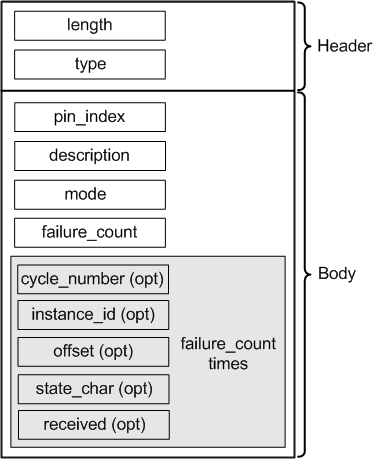

ErrorMapAttrType
Contains detailed information about the errors occurred during running a scan pattern. The data type is DRLErrorMapAttr.

Field Name |
Data Type |
Description |
Comments |
|---|---|---|---|
length |
int |
Attribute length |
These fields form the attribute header. |
type |
short |
Attribute type |
|
pin_index |
short |
Pin index |
|
description |
string |
Descriptive text, can be empty |
|
mode |
unsigned int |
Bitwise or'ed, specifying which information is available:
|
|
failure_count |
unsigned int |
Number of recorded failures |
|
cycle_number |
long long |
Number of the failed cycle |
optional, see mode |
instance_id |
int |
Numeric ID of the scan instance, the ID is defined in the ScanInstanceListAttrType |
optional, see mode |
offset |
long long |
Offset in the scan instance |
optional, see mode |
state_char |
char |
State character of the failed cycle |
optional, see mode |
received |
char |
Received data of failed cycle |
optional, see mode |
Functional changes
- Introduced in SmarTest 6.5.0